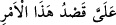

“Andolsun ki, biz” seni kavmine gönderdiğimiz gibi “senden önce kendi kavimlerine
nice peygamberler gönderdik de onlara açık deliller getirdiler.” Yâni, senin kavmine
parlak deliller getirdiğin gibi her peygamber kendi kavmine peygamberlik dâvâsında
doğruluğuna dâir kendisine mahsus açık deliller getirdi. “(Onları dinlemeyip) günaha
dalanların ise cezâlarını hakkıyla vermişizdir.” Yâni onlar peygamberleri
yalanladılar, biz de cürüm işleyenlerden initkam alıp onları cezâlandırdık. Onların
cürümleri peygamberleri yalanlamak ve bunda ısrar etmekti. Yâni biz onları
cezâlandırdık ve helâk ettik.
İsm-i mevsûlun, “ (onlar) zamiri yerine konulması, hazfedilenin yerine dikkat
çekmek ve onun intikam almanın sebebi olduğunu hissettirmek içindir.
“Mü’minlere yardım etmek de bize düşer.” Onları düşmanlarının şerrinden ve
başlarına gelen azabdan kurtarmak pek değerli bir yardım ve pek büyük bir kurtarmadır.
Bazıları buradaki gerekliliğin zorunluluktan dolayı bir gereklilik değil, Allâh’ın kerem
ve lütfundan dolayı bir gereklilik olduğunu söylemiştir. el-Vasît’ta şöyle der: “Bu
Allâh’ın kendi zâtına vâcib kıldığı bir gerekliliktir.” Keşfü’l-esrâr’da ise şöyle der:
“Bu söz, ‘Bu işi yapmak bana düşer, onu ben yaparım’ anlamında “
”
denilmesi gibidir.”
Burada Allâh’ın intikam almasının mü’minler için ve onların değerini ortaya çıkarmak
için olduğu hissettirilmektedir. Çünkü mü’minler Allâh’ın kendilerine yardım etmesine
müstehak kılınmıştır.
Bir hadîste Rasûlullah (s.a.): “Hangi müslüman, kardeşinin ırzını korursa, onu
cehennem ateşinden korumak da Allâh’a düşer.”[45] buyurmuş, sonra da “Mü’minlere
yardım etmek de bize düşer.” âyetini okumuştur.
Şeyh Ebû Ali Rûzbâri (k.s.)’tan nakledildiğine göre dervişlerden bir topluluk onun
yanına geldi. Onlardan birisi hastalandı ve günlerce hasta kaldı. Arkadaşları ona hizmet
etmekten usandı ve bir gün durumu Şeyh Ebû Ali’ye şikâyet ettiler. Bunun üzerine Şeyh
nefsine muhalefet etti ve onun hizmetini kendisinden başkasının üstlenmemesi için yemin
etti. Günlerce onun hizmetini bizzat kendisi yerine getirdi. Sonra o derviş öldü. Onu
yıkadı, kefenledi, cenaze namazını kıldı ve defnetti. Kabirde arkadaşlarının yanında
kefeninin baş tarafını açmak istediğinde onun gözlerinin kendisine doğru açık olduğunu
gördü. Kendisine şöyle söyledi: “Ey Ebû Ali! Nefsine muhâlefet edip bana yardım
ettiğin gibi mutlaka ben de kıyâmet günündeki makamım sayesinde sana yardım
edeceğim.”
Bu kıssada dikkat çekilecek bazı hususlar vardır:
1- Allâh’ın sevdiği kimseler, ölseler de hakikatte diridirler. Onlar ancak bir yurttan
başka bir yurda naklolunurlar.
2-
Hz.
Peygamber
(s.a.)’in
şu
hadîsinde
işâret
ettiği
husustur:
“Devletleri/zenginlikleri gelmeden önce fakirlere el uzatıp yardım edin. Çünkü